※이 글은 앞으로 오버클럭 새 시즌마다 쓸 오버클럭 공략을 위해 작성됨
(싱크 160~201 저싱크로 뉴비들 대상)
버프작 전에 본인 조합이 낮은 싱크로 25단을 할 수 있는 조합인지 확인해보자
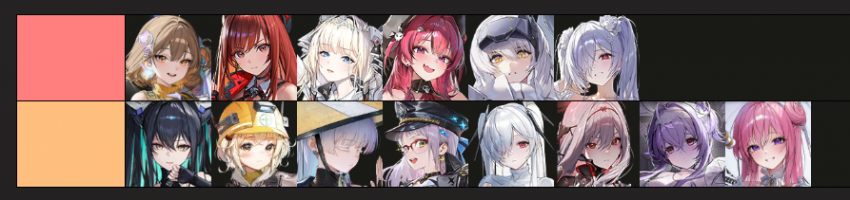
보스, 오버클럭 세팅 따라 다르겠지만 통상적으로 위에 있는 니케들이 많을 수록 25단이 쉽다.
조합이 동D 민트 프리카 아인 레후인 사람과
돌니스 크라운 메스트 각설 라피인 사람은 25단 달성 난이도가 하늘과 땅 차이임.
전자의 경우 기본적으로 총 투력 20만 이상은 되야 클각이 나오는데
후자는 총 투력 16만 언저리부터 열심히 박치기하면 25단 각 충분히 나온다.
나는 이미 오토로 딸깍하는 단계에 접어들어서 뉴비의 고충을 정확히 헤아릴 수는 없지만
대충 투력 컷을 말해주자면
각설 라피 네온 등 대장 딜러진은 투력 16~17만
딜러 하나가 좀 약한 1티어 급인 경우 17~18만
딜러 하나가 통상 2퍼따리 인 경우 18~19만
정도 투력으로 도전 가능 하다고 보면 됨.
여기서 돌니스 있으면 컷이 좀 더 내려가고
크라운 없으면 보스가 노답일 경우 20만 언저리로도 클리어 불가능.
본인이 불법 이륙해서 조합이 약하면 160찍고는 15~20단 정도만 노리고
투력 181 201 넘겨가면서 25단 도전하자
버프작 하는 법
버프 세팅
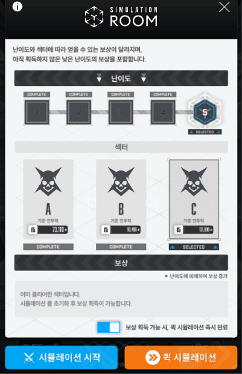
시뮬레이션 시작해서 딸깍으로 스칩, 버칩받은 후 '퀵 시뮬레이션' 을 한번 더 누르면
버프 선택창으로 넘어가게 됨.
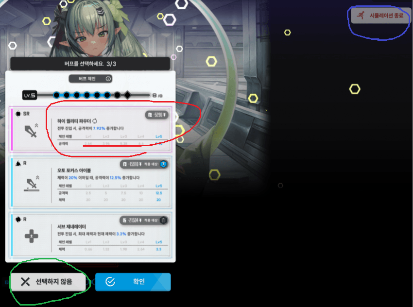
버프 선택창으로 오면, 버프를 고를 기회를 총 3번 주는데 가져갈 수 있는 버프는 '1개' 뿐임.
에픽 버프는 가져갈 수 없으니 고를 필요 없다.
좋은 버프가 떴다면 클릭해서 가져가면 됨
가져갈 버프를 정했거나 좋은 버프가 없다면 나머지 버프들은 선택하지 않아도 됨
3번의 기회동안 좋은 버프를 챙기지 못했다면 보스전 진행하지 않고 시뮬레이션 종료
짤을 예시로 보면 1번 버프가 아무 마크도 달려있지 않은 '니케 전체 공격력 증가' 효과라 매우 좋은 옵션임.
가져갈 수 있는 버프는 1개뿐이니까 선택 기회에서 다른 어떤 버프가 뜨더라도 가져갈 이유가 없음.
전체 공증 버프를 고른 뒤 보스 잡고 버프 챙기면 총 가져갈 수 있는 버프 8개 중 1개를 챙기게 되는 것임.
그렇게 버프 8개를 챙기려면 이걸 최소 8번, 최대 nn번 해야 함.
버프 세팅 과정에서 옵션의 등급(R~SSR), 모양은 중요하지 않음.
지금은 버프를 찾는게 포인트니까 버프의 '이름값'에만 집중하면 된다.
챙겨야 할 필수 버프는 다음과 같음.
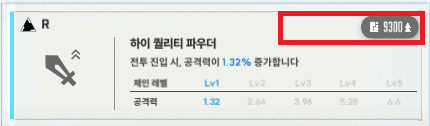
하이 퀄리티 파우더
공격력 증가라는 심플하고도 매우 강력한 효과임.
총 3종류가 있는데, 짤처럼 아무런 표시도 없는 건 '니케 전체 공증' 이고
빨간 네모 칸에 기업, 역할군 마크가 박혀있는 공증은 '해당 니케 공증' 임.
즉, 본인이 네온을 쓴다면 '전체 공증', '미실리스 공증', '화력형 공증' 총 3개의 공증을 네온에게 먹일 수 있음.
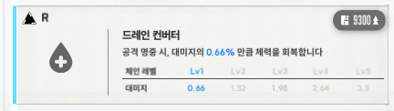
드레인 컨버터
저싱크로 뉴비들은 피흡 안 챙기고 가면 절대로 25단 못 함
이 버프는 전체 피흡이랑 무기군 묶어놓은 피흡 총 2종류가 나오는데, 뭐가 됐던 전체 피흡 하나만 챙겨가면 충분 함.
버프작을 통해 피흡을 챙기기 때문에 의외로 힐의 밸류가 딱히 높지 않음 (헬름, 앵커 등)
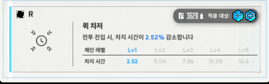
퀵 차저(SR, RL 다수 조합 한정)
내 조합에 과반수 이상이 차지형 무기라면 가져갈만한 버프임.
특히 네온은 차속>>>공증의 딜 효율을 가지고 있기도 함.
딜러들 중 하나라도 차지형이라면 차속 버프를 챙기는걸 추천한다.
각설, 수렐루 저격모드 등 어떤 상황에서도 차지 시간이 고정인 니케들은 아무런 효과 없다는거 유의
만약 본인 조합이 위와 같을 때, 극한의 극한으로 버프작 할거라면
하이 퀄리티 파우더 (전체 공증)
하이 퀄리티 파우더 (테트라 공증) 혹은 (방어형 공증)
하이 퀄리티 파우더 (미실리스 공증)
하이 퀄리티 파우더 (엘리시온 공증)
하이 퀄리티 파우더 (화력형 공증)
드레인 컨버터
퀵 차저
이 7개의 버프들을 전부 챙기고 나머지 빈자리는 크확, 크댐, 차댐 등 딜버프나 랩처공깎, 확률재장전 등 유틸 버프로 채우면 됨.
채워 넣은 자리는 25단 도전하면서 중간 보스 잡고 나오는 탄창 or 재장전 에픽 버프로 갈아 끼우면 깔끔함.
방어, 체력 등 딱봐도 구려보이는 옵션은 챙길 이유 없음.
아 그리고 주의할 점.
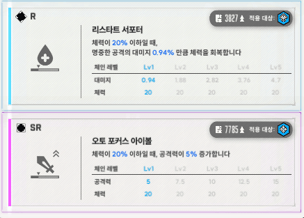
체력 20% 이하일 때 ~~~ 버프류는 절대로 챙기지 않음.
내 니케들 체력이 20% 이하가 됐다는건 이미 ㅈ됐다는 뜻이므로 여기서 피흡량 늘어나고 공격력 늘어나봤자 아무런 도움이 되지 않는다.
특히 피흡 버프인 '드레인 컨버터'와 완전히 상충되는 효과니까 챙길 이유가 없음.
위 글을 토대로 버프 세팅 하는 과정을 찍어봤음.
버프 3개 찾는데 3분 걸렸으니 대충 운 좋으면 1분에 하나씩 10분 내외로 버프 8개를 찾을 수 있음.
이렇게 공버프 둘둘 둘렀으니 25단 달려볼까?
아직 끝이 아니다
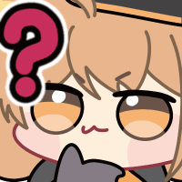
버프 강화
버프를 다 집고나면 버프의 모양도 제각각이고 등급도 SSR이 아닌 R따리 SR따리 쓰레기 버프들로 구성되어 있을거임.
이걸 전부다 업그레이드 해야한다.
다시 시뮬 시작 누르고 이번엔 '시뮬레이션 시작'을 눌러 진행을 해야 한다.
전투는 노말 눌러서 빠전으로 계속 넘기면 됨.
보상으로 주는 버프들은 내가 갖고 온 버프의 SSR 혹은 통일하기로 정한 모양이 아니고선 고를 필요 없다.
이미 세팅을 다 해놓은 상태니까.
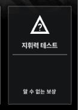
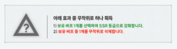
'지휘력 테스트' 방을 최대한 눌러서 버프 SSR로 바꾸는거, 모양 다른거로 바꾸는거를 최대한 고른다.
모양은 본인이 임의로 정한거로 통일하면 됨. ㅇ 모양으로 통일할거면 ㅇ 모양만 고르면 되는거지.
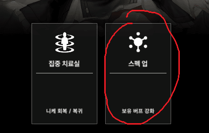
만약 '지휘력 테스트'에서 버프를 강화하지 못했다면 막보 전 선택지에서 보유 버프 강화를 눌러 마지막 기회를 노리자.
여기까지 했는데
버프 SSR 못 띄웠고 원하는 모양도 못 맞췄으면 보스 잡지 말고 시뮬레이션 종료하고 다시 한다.
버프 강화에 성공했다면,
예를 들어 전체 공증 SSR 혹은 ㅇ 모양을 세팅했다.
그러면 보스 잡고 내가 세팅한 버프로 기존 전체 공증 버프를 갈아 끼운 후 다시 시뮬을 돌린다.
시뮬 돌리면서 이 전체 공증 버프의 나머지를 맞춰주면 되는거임.
SSR ㅁ 모양이면 ㅇ으로 바꿔주고, R ㅇ모양이면 SSR로 등급 올려서 버프를 완성시키는 방식인거지.
버프 세팅에서 말했듯이 가져갈 수 있는 버프는 '1개' 뿐이니까 버프 7개를 SSR, 모양통일 할때까지 반복해야 한다.
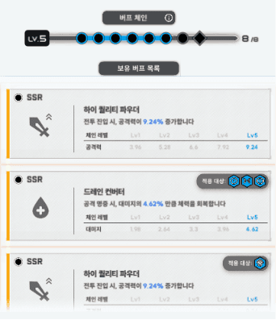
같은 모양을 맞추는 이유인 '버프 체인'은 같은 모양 버프를 '6개' 요구함.
그래서 사실 모양 맞추는건 6개만 해줘도 무방하다.
하지만 내가 오버클럭 도전 중 얻은 에픽 버프 모양이 세팅해둔 버프들과 다를 경우, 체인 레벨이 내려가버림.
그래서 체인이 깨지지 않을 '예비 체인'까지 세팅을 해둬야 하는거지.
만약 본인이 운이 좋아 에픽 버프 2개를 집을 재능이거나
에픽 버프 2개 뽑아야 25단 클각 나오는 응애라면 8개 전부다 맞춰야 되겠지?
마찬가지로 글 내용대로 버프 강화하는 과정을 찍어봤다.
영상을 보면 알겠지만 버프 찾는 것보다 버프를 강화하는 과정이 훨씬 오래 걸리고 귀찮음.
싱크 160으로 열심히 비트는 경우에만 빡으로 버프작 하고
싱크 181~200쯤 되면 대충 피흡 버프만 챙기고 설렁설렁 작업해도 25단 충분히 가능함.
221 부터는 버프작 필요없이 풀오토 돌려도 된다.
위 싱크 예시는 당연히 조합 좋을 때 얘기고
내 조합 따라 컷이 올라가는건 염두해야한다.
열심히 썼는데 개추 좀